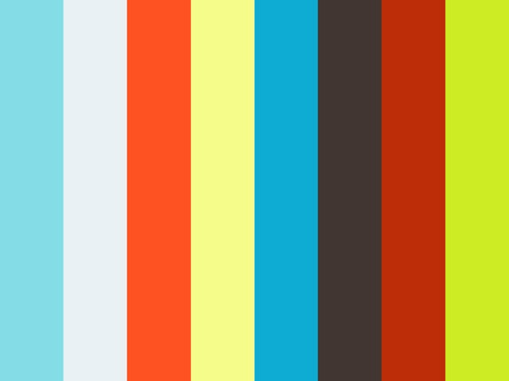

Massimo Scognamiglio — Artista · Fotografo · Editore. Roma, dal 1995.


“The American countryside is the starting point... but in truth, it has little to do with it. I love only two things in the world: human beings and everything else. And my photography tells this story. I don't know what the connection is, if there is one, between the landscapes and the human beings I represent. For me landscape is everything: from the hill to the pack of cigarettes placed on the table. The landscape is what man is immersed in. 'Tales of humans in a landscape' is the title of this series and, in the end, it is a fraudulent title: there are no stories, and human beings are not 'in' the landscape but are placed alongside it. You can find the stories in the connections that as observers you can create. Because the viewer is part — like me, the humans and the landscapes — of this (senseless) story that is existence. You too are part of this fraud.”Massimo Scognamiglio

Massimo Scognamiglio stands as a poignant figure in the landscape of contemporary art, his works a testament to the profound layers of human introspection. Without resorting to hyperbole, it is evident that his art delves into the crevices of mental unease while simultaneously radiating a palpable life force. Scognamiglio's oeuvre is a journey through the psyche, with series like 'Gli Strappi' (1998-2004) which laid bare the raw edges of human emotion, and 'Ciclo delle Stanze' (2008-today), where each room becomes a chapter of an introspective narrative.
Born in Rome, he lives and works in Rome. Artist, photographer, and digital evangelist, he paints, photographs, and has been exhibiting since the mid-'90s. From 2006 he lived for two years in California, then for a brief period he moved to Paris where he paints, photographs, designs performances, his most famous Rebirth, which took place in 2016 at Place de la République. Today, he lives and works in Rome, in his studio-house-gallery known as Le Petit Atelier.
He has exhibited at the MACRO Museum Asylum in Rome, with the project 'Where is the future?', at the Palazzo delle Esposizioni, also in Rome, with the exhibition 'The Shining Consciousness', moreover he has entered the permanent collection of the Museum of Modern Art of Vibo Valentia LIMEN; in addition to other galleries in Italy and abroad.
In 2023 and 2022 he enters the five finalists of the prestigious Exibart Prize, and in 2026 he was selected by Exibart among the '222 artisti emergenti su cui investire' (222 Emerging Artists to Invest In).
For any questions or inquiries related to purchases, please feel free to reach out.
Exhibitions in private & public galleries & museums.
“And so, tired of all this, weary of the gentrification that came with millions of pounds and/or dollars, tired of rock music traveling to exorbitantly expensive recording studios, to millionaire tours, to producers, managers, press offices of every kind, utterly sick of the gigantic and unstoppable machine that the music business had become... well, tired of all this and of a rock that had even become 'symphonic,' punk was born... and thankfully so.”Michael Pergolani — dal testo introduttivo della mostra The Magnificent Seven / Punk Aristocracy





A film by Massimo Scognamiglio Studio & Irida Production. Directed by Massimo Scognamiglio & Fabrizio Boni. With Miriam Consoni & Sarah Jane. © 2017 Massimo Scognamiglio.
Massimo Scognamiglio is the Creative Director and the publisher of two different magazines: The Magazine of Everything & Stump Magazine.
'The Magazine of Everything' originates as an artistic work even before being a traditional magazine because it aims to negate editorial intervention. Unlike a political act, where one starts with a corollary and demonstrates it, the work takes on meaning afterward, following the stream of consciousness between the various works.
STUMP Magazine: Soon on the newstands near you. Work in progress.

Quitapina+ the first Album by Le Stelle di S. On Soundcloud.

1998 Palazzo delle Esposizioni Roma. Collective Exhibition curated by Mariangela Shoether.
Museo Pecci logo and connection to Videominuto 2005 participation.
Esplora le opere, scarica il portfolio aggiornato o vieni a trovarmi a Le Petit Atelier, Roma.
Per informazioni, acquisti o collaborazioni.
me@massimoscognamiglio.com